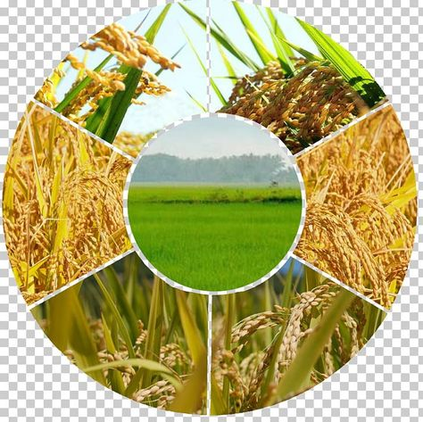

Crops
"Crops" refer to plants that are cultivated and harvested on a large scale for various purposes, including food, fiber, fuel, or other commercial uses. These plants are intentionally grown by farmers or agricultural producers to be harvested for consumption, sale, or use in various industries. Crops encompass a wide range of plant species, including grains (such as wheat, rice, corn), fruits, vegetables, oilseeds (like soybeans and sunflowers), legumes (such as beans and peas), and fiber crops (like cotton). The cultivation of crops is a fundamental aspect of agriculture and plays a crucial role in providing sustenance and resources for human populations worldwide.
Rice crop
A "rice field" refers to a flooded or irrigated piece of land where rice plants are cultivated. Rice is a staple food for a significant portion of the world's population, particularly in Asia. Rice fields are carefully managed to maintain the appropriate water levels required for the growth of rice plants, which thrive in flooded or waterlogged conditions. The cultivation of rice typically involves several stages, including planting, flooding or irrigation, growth, and eventual harvesting of the rice grains. Rice fields are a common sight in regions with suitable climates and soil conditions for rice cultivation. Rice
Rice
cotton crop
A "cotton crop" specifically refers to the cultivation of cotton plants on a large scale for the purpose of harvesting cotton fiber. Cotton is a soft, fluffy staple fiber that grows in a boll, or protective case, around the seeds of cotton plants of the genus Gossypium.
 Cotton
Cotton
Sunflower crop
A "sunflower" refers to a tall, annual plant native to North America that belongs to the genus Helianthus. Sunflowers are known for their large, bright yellow flower heads, which can grow up to 30 centimeters (12 inches) or more in diameter. These flowers typically have a prominent central disk surrounded by bright yellow ray florets, which give them their distinctive appearance.
 Sunflower
Sunflower
Turmeric crop
A "turmeric crop" refers to the cultivation of turmeric plants on a large scale for commercial purposes. Turmeric (Curcuma longa) is a perennial herbaceous plant that is grown primarily for its rhizomes, which are harvested and processed to obtain the spice known as turmeric.
 Turmeric
Turmeric
Papaya crop
A "papaya crop" refers to the cultivation of papaya plants on a large scale for commercial purposes. Papaya (Carica papaya) is a tropical fruit tree native to the Americas, but it is now cultivated in many tropical and subtropical regions around the world. Papayas are known for their sweet, juicy fruit, which is consumed fresh and used in various culinary applications.
 Papaya
Papaya
Chilli crop
Chilli crops, also known as chili peppers or hot peppers, are a type of plant cultivated for their spicy fruits, which are used as a popular ingredient in various cuisines around the world. Chilli peppers belong to the genus Capsicum and are members of the nightshade family, Solanaceae.
 Chilli
Chilli
Mango crop
Mango crop refers to the cultivation of mango trees for the production of mango fruits. Mango (Mangifera indica) is a tropical fruit tree belonging to the Anacardiaceae family, native to South Asia but now cultivated in many tropical and subtropical regions around the world. Mangoes are one of the most popular and widely consumed fruits globally, prized for their sweet and tangy flavor, juicy flesh, and nutritional benefits.
 Mango
Mango